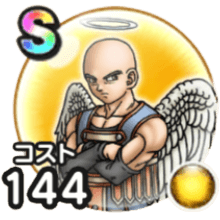

イザヤール
ドラクエ9イベントこころ最大コスト+4スキルの斬撃・体技ダメージ+5%スキルHP回復効果+5%ドルマ属性耐性+5%【守り人】みのまもり+20【守り人】HP25%以上で致死ダメージ時にごくまれにHP1で生き残る / 8.0点
くわしい特徴
【ランク特殊効果】 こころ最大コスト+4スキルの斬撃・体技ダメージ+5%スキルHP回復効果+5%ドルマ属性耐性+5%【守り人】みのまもり+20【守り人】HP25%以上で致死ダメージ時にごくまれにHP1で生き残る

ドラクエ9イベントこころ最大コスト+4スキルの斬撃・体技ダメージ+5%スキルHP回復効果+5%ドルマ属性耐性+5%【守り人】みのまもり+20【守り人】HP25%以上で致死ダメージ時にごくまれにHP1で生き残る / 8.0点
【ランク特殊効果】 こころ最大コスト+4スキルの斬撃・体技ダメージ+5%スキルHP回復効果+5%ドルマ属性耐性+5%【守り人】みのまもり+20【守り人】HP25%以上で致死ダメージ時にごくまれにHP1で生き残る